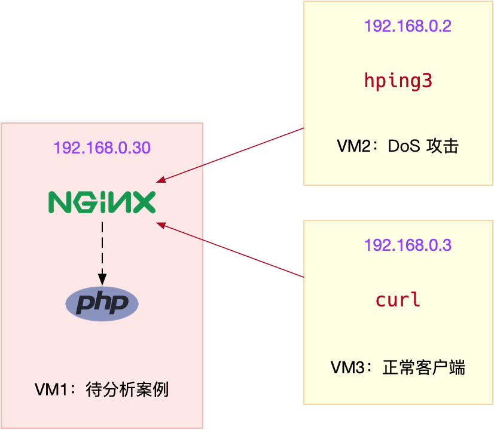
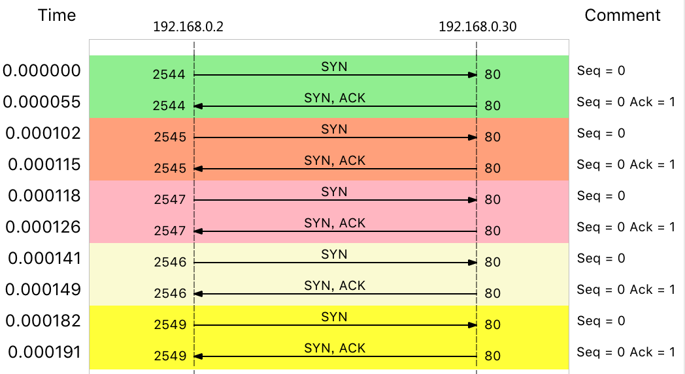
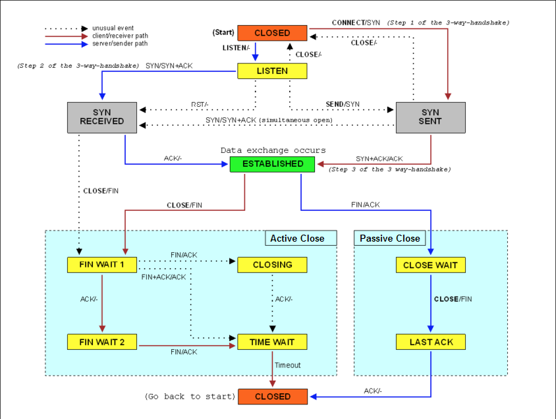

DDoS 简介
DDoS 的前身是 DoS（Denail of Service），即拒绝服务攻击，指利用大量的合理请求，来占用过多的目标资源，从而使目标服务无法响应正常请求。
DDoS（Distributed Denial of Service） 则是在 DoS 的基础上，采用了分布式架构，利用多台主机同时攻击目标主机。这样，即使目标服务部署了网络防御设备，面对大量网络请求时，还是无力应对。
比如，目前已知的最大流量攻击，正是去年 Github 遭受的 DDoS 攻击，其峰值流量已经达到了 1.35Tbps，PPS 更是超过了 1.2 亿（126.9 million）。
DDoS 可以分为下面几种类型。
- 第一种，耗尽带宽。无论是服务器还是路由器、交换机等网络设备，带宽都有固定的上限。带宽耗尽后，就会发生网络拥堵，从而无法传输其他正常的网络报文。
- 第二种，耗尽操作系统的资源。网络服务的正常运行，都需要一定的系统资源，像是 CPU、内存等物理资源，以及连接表等软件资源。一旦资源耗尽，系统就不能处理其他正常的网络连接。
- 第三种，消耗应用程序的运行资源。应用程序的运行，通常还需要跟其他的资源或系统交互。如果应用程序一直忙于处理无效请求，也会导致正常请求的处理变慢，甚至得不到响应。
- 比如，构造大量不同的域名来攻击 DNS 服务器，就会导致 DNS 服务器不停执行迭代查询，并更新缓存。这会极大地消耗 DNS 服务器的资源，使 DNS 的响应变慢。
案例

首先，在终端一中，执行下面的命令运行案例，也就是启动一个最基本的 Nginx 应用：
# 运行Nginx服务并对外开放80端口
# --network=host表示使用主机网络（这是为了方便后面排查问题）
$ docker run -itd --name=nginx --network=host nginx
然后，在终端二和终端三中，使用 curl 访问 Nginx 监听的端口，确认 Nginx 正常启动。假设 192.168.0.30 是 Nginx 所在虚拟机的 IP 地址，那么运行 curl 命令后，你应该会看到下面这个输出界面：
# -w表示只输出HTTP状态码及总时间，-o表示将响应重定向到/dev/null
$ curl -s -w 'Http code: %{http_code}\nTotal time:%{time_total}s\n' -o /dev/null http://192.168.0.30/
...
Http code: 200
Total time:0.002s
从这里可以看到，正常情况下，我们访问 Nginx 只需要 2ms（0.002s）。
接着，在终端二中，运行 hping3 命令，来模拟 DoS 攻击：
# -S参数表示设置TCP协议的SYN（同步序列号），-p表示目的端口为80
# -i u10表示每隔10微秒发送一个网络帧
$ hping3 -S -p 80 -i u10 192.168.0.30
然后，到终端三中，执行下面的命令，模拟正常客户端的连接：
# --connect-timeout表示连接超时时间
$ curl -w 'Http code: %{http_code}\nTotal time:%{time_total}s\n' -o /dev/null --connect-timeout 10 http://192.168.0.30
...
Http code: 000
Total time:10.001s
curl: (28) Connection timed out after 10000 milliseconds
你可以发现，在终端三中，正常客户端的连接超时了，并没有收到 Nginx 服务的响应。
可以回到终端一中，执行下面的命令：
$ sar -n DEV 1
08:55:49 IFACE rxpck/s txpck/s rxkB/s txkB/s rxcmp/s txcmp/s rxmcst/s %ifutil
08:55:50 docker0 0.00 0.00 0.00 0.00 0.00 0.00 0.00 0.00
08:55:50 eth0 22274.00 629.00 1174.64 37.78 0.00 0.00 0.00 0.02
08:55:50 lo 0.00 0.00 0.00 0.00 0.00 0.00 0.00 0.00
在终端一中，执行下面的 tcpdump 命令：
# -i eth0 只抓取eth0网卡，-n不解析协议名和主机名
# tcp port 80表示只抓取tcp协议并且端口号为80的网络帧
$ tcpdump -i eth0 -n tcp port 80
09:15:48.287047 IP 192.168.0.2.27095 > 192.168.0.30: Flags [S], seq 1288268370, win 512, length 0
09:15:48.287050 IP 192.168.0.2.27131 > 192.168.0.30: Flags [S], seq 2084255254, win 512, length 0
09:15:48.287052 IP 192.168.0.2.27116 > 192.168.0.30: Flags [S], seq 677393791, win 512, length 0
09:15:48.287055 IP 192.168.0.2.27141 > 192.168.0.30: Flags [S], seq 1276451587, win 512, length 0
09:15:48.287068 IP 192.168.0.2.27154 > 192.168.0.30: Flags [S], seq 1851495339, win 512, length 0
...


DDoS 到底该怎么防御
当 DDoS 报文到达服务器后，Linux 提供的机制只能缓解，而无法彻底解决。即使像是 SYN Flood 这样的小包攻击，其巨大的 PPS ，也会导致 Linux 内核消耗大量资源，进而导致其他网络报文的处理缓慢。
对于流量型的 DDoS 来说，当服务器的带宽被耗尽后，在服务器内部处理就无能为力了。这时，只能在服务器外部的网络设备中，设法识别并阻断流量（当然前提是网络设备要能扛住流量攻击）。比如，购置专业的入侵检测和防御设备，配置流量清洗设备阻断恶意流量等。
DDoS 并不一定是因为大流量或者大 PPS，有时候，慢速的请求也会带来巨大的性能下降（这种情况称为慢速 DDoS）。
比如，很多针对应用程序的攻击，都会伪装成正常用户来请求资源。这种情况下，请求流量可能本身并不大，但响应流量却可能很大，并且应用程序内部也很可能要耗费大量资源处理。
这时，就需要应用程序考虑识别，并尽早拒绝掉这些恶意流量，比如合理利用缓存、增加 WAF（Web Application Firewall）、使用 CDN 等等。
小结
学习了分布式拒绝服务（DDoS）时的缓解方法。DDoS 利用大量的伪造请求，使目标服务耗费大量资源，来处理这些无效请求，进而无法正常响应正常的用户请求。
由于 DDoS 的分布式、大流量、难追踪等特点，目前还没有方法可以完全防御 DDoS 带来的问题，只能设法缓解这个影响。
比如，你可以购买专业的流量清洗设备和网络防火墙，在网络入口处阻断恶意流量，只保留正常流量进入数据中心的服务器中。
在 Linux 服务器中，你可以通过内核调优、DPDK、XDP 等多种方法，来增大服务器的抗攻击能力，降低 DDoS 对正常服务的影响。而在应用程序中，你可以利用各级缓存、 WAF、CDN 等方式，缓解 DDoS 对应用程序的影响。